KÜTAHYA
Giriş
Kütahya, Türkiye'nin batısında yer alan ve tarihi kökleri antik çağlara kadar uzanan önemli bir şehirdir. Ege Bölgesi'nin iç kesimlerinde bulunan Kütahya, kültürel mirası, termal suları ve çini sanatı ile tanınır. Şehir, Hititler, Frigler, Romalılar, Bizanslılar ve Osmanlılar gibi birçok medeniyete ev sahipliği yapmıştır. Zengin tarihinin izlerini taşıyan Kütahya, aynı zamanda doğal güzellikleri ve termal kaynakları ile de dikkat çeker. Özellikle Kütahya Çini Müzesi ve Aizanoi Antik Kenti, ziyaretçilerin ilgisini çeken başlıca turistik yerlerdendir. Bu özellikleriyle Kütahya, hem tarihi hem de doğal zenginlikleri bir arada sunan benzersiz bir destinasyon olarak öne çıkar.
Nüfus ve Yüzölçümü
Kütahya nüfusu 2023 yılına göre 575.674'dir. Bu nüfus, 284.542 erkek ve 291.132 kadından oluşmaktadır. Yüzde olarak ise: %49,43 erkek, %50,57 kadındır. İlin yüz ölçümü 11.632 km2'dir. İlde km2'ye 50 kişi düşmektedir. 2021 TÜİK verilerine göre 13 ilçe, 28 belediye, bu belediyelerde 222 mahalle, ayrıca 546 köy bulunmaktadır.
Gezilebilecek Yerler
Aizanoi Antik Kenti
Aizanoi Antik Kenti Kütahya Çavdarhisar ilçe merkezinde, Kütahya’ya 50 kilometre uzaklıktadır. Penkalas (Kocaçay) Irmağı'nın yukarı kesiminde tanrıça Meter Steunene’nin kutsal mağarası civarında yaşayan Frigyalılar'ın öncüsü olarak antik kaynaklarda geçen Azan adlı mitoloji kahramanının, Su Perisi Erato ile efsanevi Kral Arkas'ın birleşmesinden Aizanoi şehrinin ortaya çıktığı düşünülmektedir.
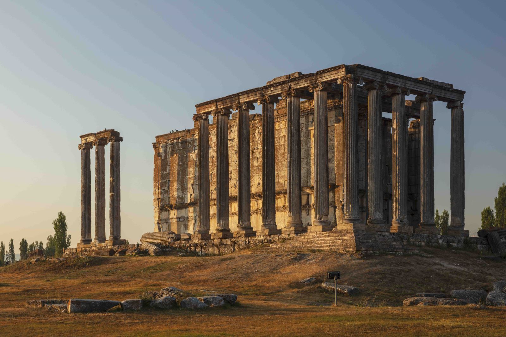
Aizanoi kenti, antik Frigya'ya bağlı olarak yaşayan Aizanitis’lerin ana yerleşim merkeziydi. Kentin yüksek platosu üzerinde bulunan Zeus Tapınağı'nın çevresinde yapılan kazılarda, MÖ 3 bin yıllarına ait yerleşim izlerinin ortaya çıktığı görülmüştür. Helenistik Dönem'de bu bölge değişimli olarak Bergama’ya ve Bithynia’ya bağlı iken MÖ 133’de Roma egemenliğine girmiştir. Roma imparatorluk döneminde tahıl ekimi, şarap ve yün üretimi sayesinde zenginleşmiş ve ünü bölge sınırlarını aşmış olan Aizanoi’de kesin kentleşme bulgularına ancak MÖ 1'nci yüzyıl sonlarına doğru rastlanmaktadır. Yine ilk sikkelerin bu dönemde basıldığı bilinmektedir.
Aizanoi antik kenti en parlak dönemini MS 2 yüzyılda yaşamış, büyük imar faaliyetleri görmüş ve bu dönemde birçok yapı inşa edilmiştir. Erken Bizans Dönemi'nde piskoposluk merkezi iken, 7'nci yüzyıldan itibaren bu önemini yitirmiştir. Tapınak düzlüğü Orta Çağ'da bir hisara dönüştürülmüştür. Selçuklular Dönemi'nde Çavdar Tatarları tarafından üs olarak kullanılmasından dolayı buraya Çavdarhisar adı verilmiştir.
Kütahya Kalesi
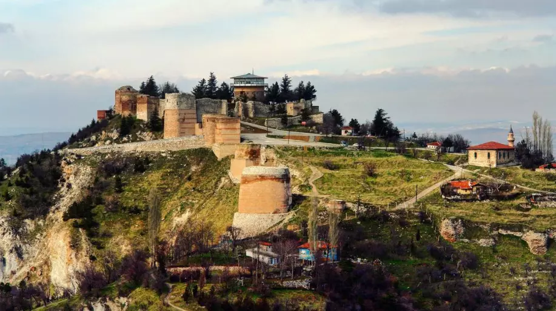
Geçmişi Bizans dönemine kadar uzanan Kütahya Kalesi günümüzdeki yapısına Germiyanoğluları, Selçuklular ve Osmanlı imparatorluğunun yaptığı onarım ve eklemelerle kavuşmuştur. Çeşme, mescit ve Cumhuriyet Dönemi’nden kalma kır kahvesi ile döner gazinosu olan Kütahya Kalesi'nin günümüzde de bazı alanları onarımdadır.
Tarihi Kütahya Konakları

On dokuzuncu yüzyılın enfes sivil mimarilerinden olan Tarihi Kütahya Konakları, iki veya üç katlı olup küçük ve çok pencerelere, geniş saçaklara, Kütahya evlerinin kendine has 'çıkma' öğesine ve ahşap mimarisiyle insanı geçmişe götürüyor. Ahierbasan ve Germiyan sokaklarında rastlayacağınız Tarihi Kütahya Konakları, özellikle de Türk evlerinin mimarisi, yapısı ve özelliklerine ilgi duyanların bayılacağı yerlerden birisi!
Kütahya Çini Müzesi
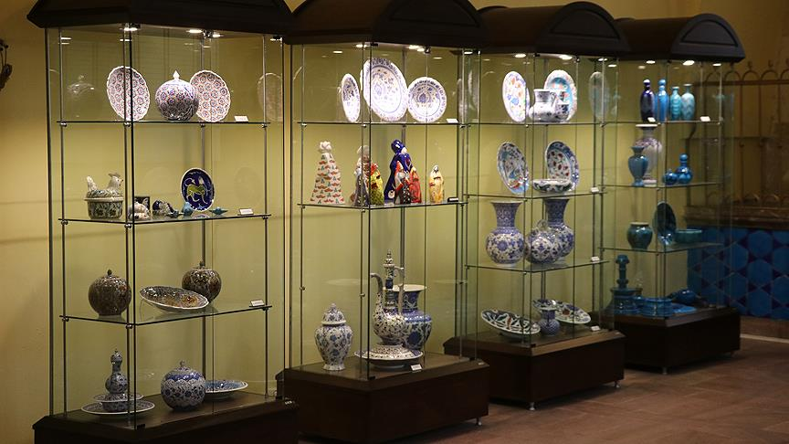Çini sanatıyla ses getirmiş Kütahya ilinde bu eşsiz sanatın müzesinin olmamasını düşünemiyoruz bile! II. Yakub Bey Külliyesi'nin imaret bölümünün Kültür ve Turizm Bakanlığı tarafından restore edilmesinin ardından 1999 yılında ziyarete açılan Kütahya Çini Müzesi, Türkiye'nin ilk ve tek çini müzesi olma özelliğini taşımaktadır.
Kütahya Arkeoloji Müzesi
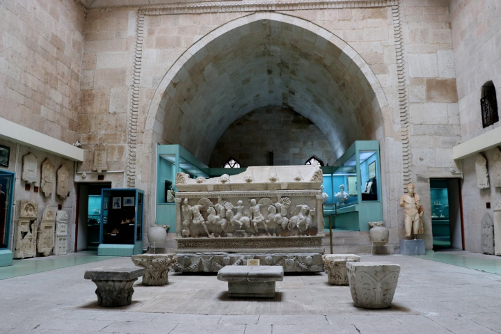1965 yılında ziyarete açılan Kütahya Arkeoloji Müzesi'nde günümüzde dahi müzenin en etkileyici eserlerinden olan dünyadaki sayılı Amazon Lahitlerinden biri yer almaktadır. Müze, Grekler ve Amazonlar arasındaki savaşları tasvir eden bu lahdin yanı sıra Geç Miyosen döneminden Osmanlı imparatorluğuna uzanan döneme değin daha birçok etkileyici eseri bünyesinde bulundurmaktadır.
Kütahya Çiniciler Çarşısı
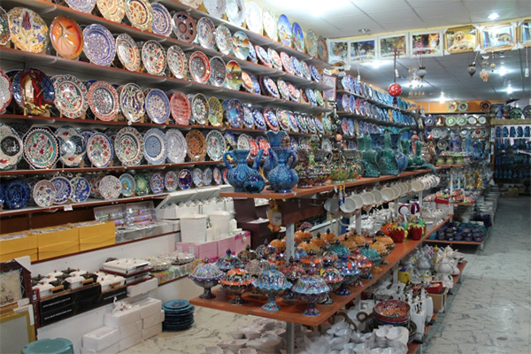Kütahya gezinizden unutulmaz bir hatırayla ayrılmanın yolu Kütahya Çiniciler Çarşısı'ndan geçiyor. Bin bir çeşit modeliyle çini sanatının o çarpıcı güzelliğinde kaybolmanızı sağlayacak yerlerden birisi olan Çiniciler Çarsısına bir göz atmanızı tavsiye ederiz!
Frigya Vadileri

Büyük çoğunluğumuzun eşek kulaklı Frigya kralı Midas ile tanıdığımız Frigler'in Frigya Vadileri oldukça ilgi çekici yapılar arasındadır. Frig sanatının, yaşamının kısacası uygarlığının pek çok izine rastladığımız Frigya Vadileri tarihe ışık tutan yerlerden. Bu vadilerde Friglerin oluşturduğu sunak, kaya mezarları ve açık hava tapınakları gibi yapılar yer almaktadır.
Domaniç Ebe Çamlığı Kent Ormanı
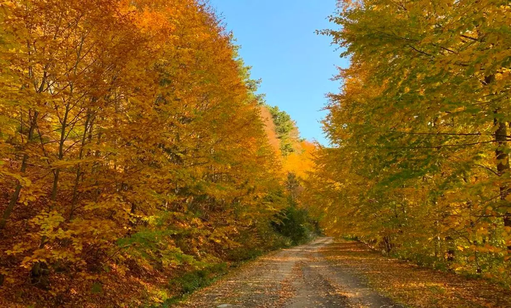Her mevsim bir başka renge bürünen Domaniç Ormanı akıl almaz renkleriyle gözlere bayram ettiren bir orman. Kütahya ilinin yarısından çoğunun ormanlık alanlardan oluşmasının yanında Domaniç, bu orman alanlarının çok daha ötesinde bir güzelliğe sahiptir. Domaniç'e gittiğinizde kamp ve doğa yürüyüşü yapan birçok insan göreceksiniz çünkü bu ormanda birkaç saat geçirmek insana yetmiyor...
Ilıcaksu Sarıkız Kaynağı
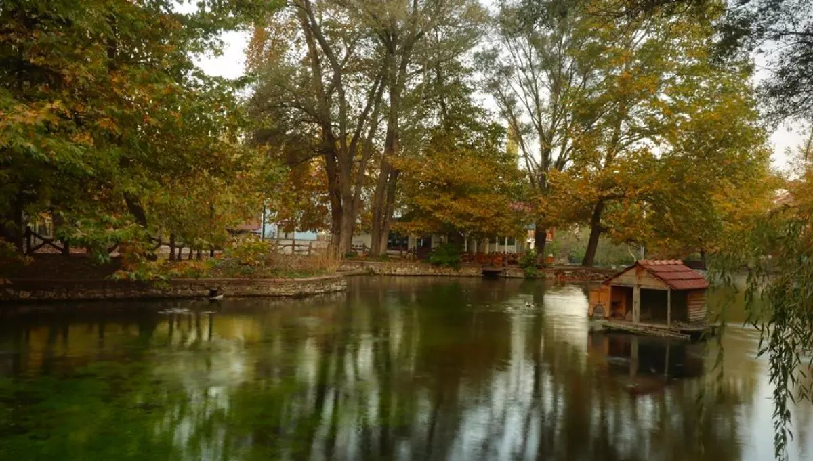Ilıcaksu Mesire/ Piknik Alanı olarak da bilinen Ilıcaksu Sarıkız Kaynağı doğanın güzelliğinde kaybolmanızı sağlayacak bir yer. Yeşillik, orman ve suyun sesinde rahatlayacağınız bu yerden Sarıkız efsanesini okumadan ayrılmayın deriz!
Sarıçiçek Yaylası
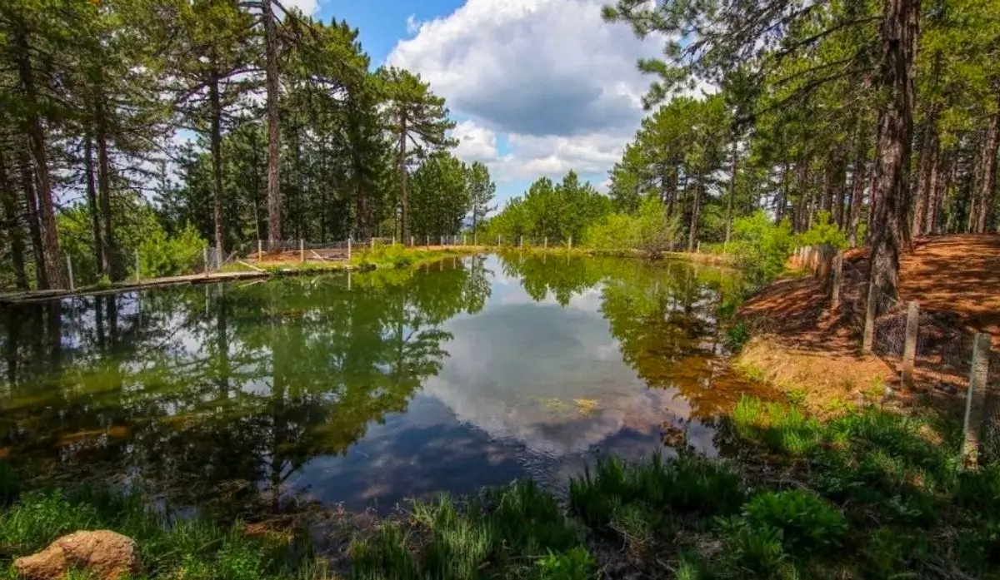Murat Dağı'nın gizli güzelliklerinden biri olan Sarıçiçek Yaylası atmosferiyle sizi büyüleyecek bir yer! Biraz sessizlik, biraz sakinlik ve biraz da huzur isteyenlerin kesinlikle uğraması gerektiğini düşündüğümüz alanlardan.
Dumlupınar Şehitliği
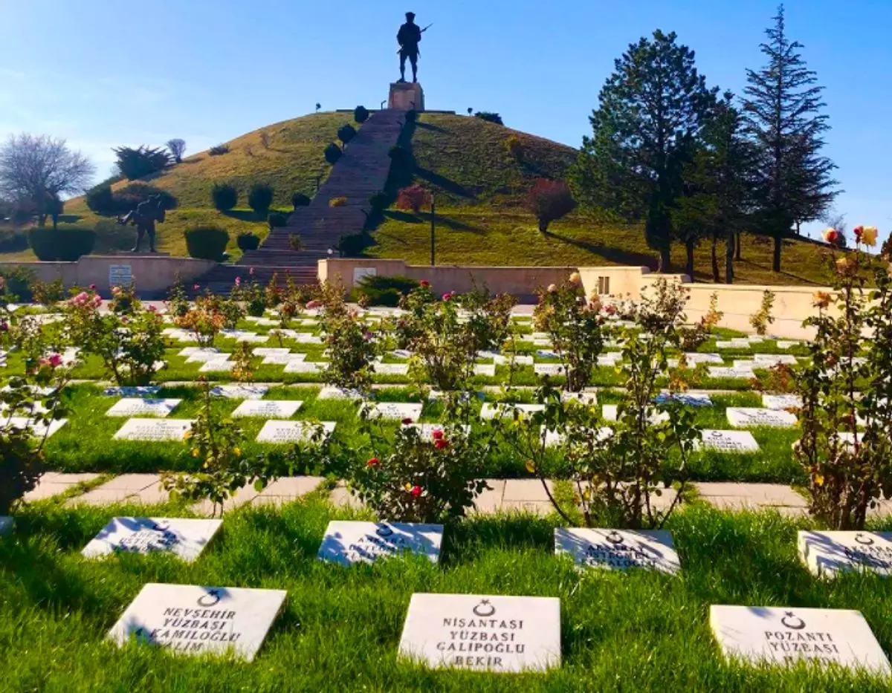1992 yılında ziyarete açılan Dumlupınar Şehitliği, Kültür Bakanlığı tarafından yaptırılan bir şehitliktir. Kütahya'nın Dumlupınar ilçesinde yer alan bu şehitlik Dumlupınar Meydan Muharebesi'nde ölen Türk askerlerinin anısına inşa edilmiştir. Mezarlık, şadırvan, otopark ve namazgâh bölümlerden oluşan şehitlikte yüz subayın, beş yüz er ve erbaşın mezar taşı yer almaktadır.
Kent Tarihi
Giriş
Ege Bölgesi'nin İç Batı Anadolu Bölümü'nde yer alan Kütahya, bilinen tarihi içinde Hitit, Frig, Roma, Bizans, Selçuklu, Germiyanoğulları ve Osmanlı Dönemi uygarlıklarıyla Türkiye Cumhuriyeti'ne ulaşmıştır. Kütahya ili sınırları içinde kalan topraklarda yerleşen ve adı bilinen en eski halk Hitit'lerdir. Buna rağmen çevredeki Arkeolojik buluntular ilin yerleşim tarihini çok daha eskilere, ilk çağlara değin götürmektedir. Kütahya için kesin bir kuruluş tarihi verilememekle birlikte; Hitit metinlerinde geçen Assuva tarihiyle ilgili IV. Tuthaliya (M.Ö. 1256–1220) yıllıklarına dayanarak M.Ö. II. binin ortalarında kurulduğu söylenebilir. Kütahya, bugün de işletilen zengin maden yatakları dolayısıyla tarihin her devresinde ilgi görmüş, bu sayede geniş ticaret yollarına sahip olmuş, hızla gelişmiştir. Malazgirt Zaferi'nin ardından XI. yüzyılın sonunda Türk uygarlıklarıyla tanışan Kütahya, Germiyanoğlu Beyliği'ne başkentlik yapmış olup Osmanlı Devleti bu topraklar üzerinde kurulmuştur.Ayrıca Kütahya "Türk ve dünya askerlik tarihi" nin en büyük zaferinin kazanıldığı yer olarak zengin bir kültürel mirasa sahiptir.
İlimizin İlk Kuruluş Yeri
İlimizin ilk yerleşim yeri Kütahya kalesi ve çevresidir. Germiyanoğulları döneminde de kullanılan şehir merkezinde yapılan kazılarda Roma dönemi nekropol (mezarlık) alanları bulunmuştur. Ancak şehir merkezinde Frigler dönemine ait önemli bir buluntuya rastlanmamıştır. Kütahya'nın antik dönemdeki yerleşim alanı henüz kesin olarak belirlenememiştir. Ne zaman kurulduğu, nerede kurulduğu, ne zaman ve kim tarafından fethedildiği kesin olarak ifade edilemeyen Kütahya, bir sırlar kentidir.
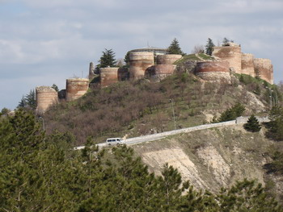 Bugüne kadar Kütahya ve çevresinde yapılan sistematik kazı ve araştırma sayısı çok değildir. İngiliz Arkeoloji Enstitüsü adına Clive Foss - Kütahya Kalesi'ni, Epigraf Tomas Drew Bear - Yazıtları, David French - Roma Yolları ve Mil Taşlarını, İstanbul Üniversitesinden Yrd. Doç. Dr. Turan Efe Antik Yerleşimlerden Höyük ve Tümülüsleri araştırmıştır. Alman Arkeoloji Enstitüsü'nün Aizanoi Antik Kentinde başlattığı sistematik kazı ve araştırmalar 1970 yılından beri devam etmektedir. Müze uzmanlarının Kütahya il sınırlarında yaptığı inceleme ve araştırma çalışmalarında yüzü aşkın höyük, tümülüs ve antik yerleşim saptanıp belgelenmiş, yapılan kurtarma kazılarıyla kentin tarihini aydınlatacak önemli arkeolojik malzemelere rastlanmıştır. Kütahya Merkez Seyitömer Höyük'te yapılan kurtarma kazılarında Eski Tunç dönemine uzanan toplu buluntular elde edilmiş olup Kütahya Arkeoloji Müzesi'nde ayrı bir salonda sergilenmektedir. Merkez Ağızören Köyü'nde 2000 yılında yapılan kazılarda Hitit yerleşimine ait nekropol (mezarlık) alanında önemli arkeolojik malzemeler ele geçmiştir. Kütahya'da Eski Tunç Dönemi'ne uzanan toplu buluntu veren en önemli merkez, 1977 yılında kömür çıkartma işlemi sırasında ulaşılan Tavşanlı Tunçbilek, Boyalık ve Gevence mevkileridir. İlin yerleşim tarihine ışık tutan Eski Tunç buluntu merkezleri Seyitömer, Tavşanlı - Kayı Köyü, Altıntaş - Üçhöyük, Domaniç - Elmalı, Simav, Emet ve Çavdarhisar yöreleridir. Buralarda ele geçen buluntular Bitynia dışında tüm Batı Anadolu'da rastlanan tipik Troya çanak - çömleği örneklerindendir. Gaga ağızlılar, üç ayaklı kaplar, depas türü maşrapalar dışında, Balıkesir, Bursa yöresine özgü Yortan kültürünün bezekli kaplarına rastlanması, Kütahya'nın kuzeyinde bu kültürün etkin olduğunu göstermektedir.
Osmanlılar Zamanında Kütahya
1381'de Kütahya ve yöresinin Osmanlılar'a çeviz olarak verilmesiyle Yıldırım Bayezid burada vali olarak görev aldı. I. Murad Kosova Seferi'ne giderken, Anadolu'nun muhafazası için çeşitli yerlere valiler tayin ederken; Bayezid'in yerine de Sarı Timurtaş Paşa'yı tayin etti. Kütahya, Yıldırım Bayezid'in Rumeli'ye geçtiği sırada 1391 senesinde Karamanoğulları tarafından istila edildiyse de Yıldırım, Gelibolu'dan geri dönüşünde Karamanoğulları'nı uzaklaştırdı.[5] 1402'de Ankara Savaşı'ndan sonra Timurlenk tarafından Germiyanoğlu II. Yakub Bey'e iade edilen topraklar II. Yakub Bey'in ölümüne kadar Germiyanoğulları'nda kaldı. 1428'de II. Yakub Bey'in vasiyetiyle Kütahya ve tüm Germiyanoğulları toprakları nihai olarak Osmanlılar'a geçti ve valiliğine de Kara Timurtaş Paşa oğlu Umur Bey'in oğlu Osman Çelebi tayin edildi. Kütahya, Fatih Sultan Mehmed zamanında İshak Paşa'nın tayinine kadar bir vilayet olarak idare edildi ve o zaman merkezi Ankara olan Anadolu Beylerbeyliği'ne bağlı bulundu. İshak Paşa 1451 senesinde Karaman ve Menteşeoğulları sıkıntılarını hallettikten sonra Kütahya'da kaldı ve bu tarihten itibaren 1826'da Anadolu Beylerbeyliği'nin ortadan kaldırılmasına kadar Kütahya, Anadolu Beylerbeyliği'nin merkezi oldu. Anadolu Eyaleti; Kütahya, Saruhan (Manisa), Aydın, Kastamonu, Menteşe (Muğla), Bolu, Ankara, Karahisar-ı Sahip (Afyonkarahisar), Çangırı (Çankırı), Teke (Antalya), Hamit (Isparta-Burdur), Sultanönü (Eskişehir), Karesi (Balıkesir) ve Bursa Sancağı olmak üzere on dört sancağa ayrılmıştır. Kanûni zamanında Anadolu Eyaleti'nin hası on yük akçe yani bir milyon akçe tutuyordu. Yine bu teşkilat gereğince Anadolu Eyaleti 299 zeamet ve 7166 tımara bölünmüş olup tımar ve zeamet askerleriyle beraber 17,000 donanımlı süvari içeriyordu.
Milli Mücadele Döneminde Kütahya
Kütahya'nın Milli Mücadele tarihimizde çok önemli bir yeri vardır. Cumhuriyetimizin kurulması için verilen bağımsızlık mücadelesinin en önemli safhası ilimiz sınırları içerisinde yaşanmıştır. I. Dünya Savaşı sonunda itilaf devletleri, Mondros Ateşkes Antlaşması hükümlerine dayanarak Anadolu'yu işgale başladılar. İşgaller karşısında milleti ve memleketi savaşa sürükleyenler, kendi hayatlarının endişesine düşerek gerekli tedbirleri almamışlardı.Ordunun elinden cephanesi alınmış, itilaf devletleri türlü vesilelerle yurdun çeşitli bölgelerini işgale başlamışlardır. İtilaf donanması İstanbul'da; Fransızlar, Adana'da; İngilizler Urfa, Maraş, Samsun ve Merzifon'da; İtalyanlar, Antalya ve Güneybatı Anadolu'da bulunuyorlardı. 15 Mayıs'ta itilaf devletlerinin izni ile Yunan ordusu İzmir'e çıkmıştır. Bu durum karşısında Türk milleti tarih boyunca gösterdiği "millet olma bilinci" içerisinde işgallere karşı Kuva-i Milliye hareketini başlatmıştır. Kütahya'da Milli Mücadele 20 Eylül 1919 günü başlamıştır. Binbaşı İsmail Hakkı, Yüzbaşı İsmet, Yüzbaşı Süleyman ve Mülazım Tahsin Beyler Kütahya'ya gelerek Kuva-i Milliye Teşkilatını kurmuşlardır. Teşkilatın başına Askerlik Şubesi Başkanı Binbaşı Nüzhet Bey seçilmiştir. İsmail Hakkı Bey Komutasında oluşturulan 350 kişilik bir müfrezenin İngilizleri Kütahya'dan çekilmek zorunda bırakması Kütahya'da Milli Mücadelenin ilk başarısıdır.Kütahya'da, Milli Alayı kurmayı başaran (Prişti-neli) İsmail Hakkı Bey, Batı Cephesi Komutanı Ali Fuat (Cebesoy) Paşa tarafından Kütahya Milil Alayı Kumandanlığıma atanmıştır. İsmail Hakkı Bey Pozantı Kongresi'nden dönmekte olan Mustafa Kemal Paşa'ya Afyon'da bulunduğu sırada telgraf çekerek Kütahya'ya "Milli Alayı" denetlemesi için davet etmiştir.
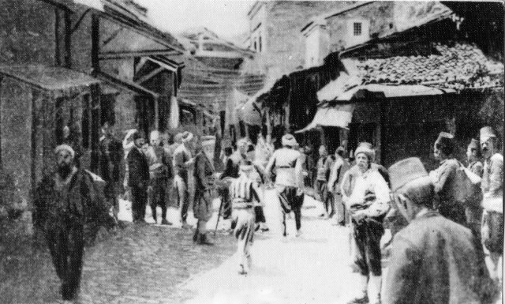 6 Ağustos 1920 tarihinde Kütahya'ya gelen Mustafa Kemal Atatürk, Milli Alayı denetlemiş ve Kütahya'dan ayrılırken Kütahya Mutasarrıfı Sait Bey'e kendi el yazısıyla takdirname vermiştir. Kütahya Milli Alayı, Milli Mücadele yıllarında önemli görevler üstlenmiş, işgal yıllarında büyük yararlılıklar göstermiştir. 10 Ağustos 1920'de imzalanan Sevr Antlaşması sonrasında Türkiye Büyük Millet Meclisi'nin antlaşmayı tanımadığını ilan etmesi üzerine işgal hızlanmış, Yunanlılar 13 Temmuz'da Altıntaş'a, 14 Temmuz'da Tavşanlı'ya, 17 Temmuz'da Emet, Simav ve Kütahya'ya 3 Eylülde Simav'a, 5 Eylülde Gediz'e girmişlerdir. 28 Temmuz 1921'de Kütahya'ya gelen Yunan Kralı Konstantin Savaş Konseyini burada toplayıp Ankara üzerine yürüme kararı çıkartmıştır. Yunan Ordusunun bu ilerleyişi karşısında Türk Ordusu, Sakarya'da Başkomutan Mustafa Kemal komutasında dünya savaş tarihinde örneği görülmeyen bir taktikle büyük bir zafer kazanmıştır. Sakarya'da durdurulan düşman ordusunu tamamen yurttan atmak amacıyla bir yıl kadar süren hazırlık döneminden sonra 26 Ağustos 1922 tarihinde Başkomutan Mustafa Kemal Büyük Taarruzu başlattı. Bu çarpışmalar sırasında Türk askeri, tarihimizin her döneminde görülen kahramanlık ve fedakarlıklarına yenilerini ekledi. 57. Tümen Komutanı Albay Reşat (Çiğiltepe) Bey'in Çiğiltepe'nin alınmasının yarım saat gecikmesi üzerine görevini yerine getirememenin üzüntüsü ile kendisini vurması, bu anlayışa örnek teşkil eder. Zaferden sonra buraya Albay Reşat Çiğiltepe Anıtı yapılarak anısı ölümsüzleştirilmiştir. Mustafa Kemal Atatürk, Büyük Taarruzu bizzat cephede idare ederek üstün askerlik vasıflarını göstermiş ve her zaman askerinin yanında Türk ordusuna büyük moral ve destek olmuştur. 30 Ağustos günü Başkomutan Mustafa Kemal'in Zafertepe'den bizzat yönettiği meydan muharebesinde Allıören, Keçiler, Kızıltaş Deresi yolunun iki yanında Yunan birlikleri tamamen sarılmış ve imha edilmişlerdir. Kızıltaş Deresi bölgesinde açık kalan alandan bazı Yunan birlikleri ve General Trikopis, General Diyenis ve bir çok Yunan komutanı kaçmışlardır. Başkomutan Mustafa Kemal, İsmet Paşa ve Fevzi Çakmak Paşa Çalköy'de yıkık bir evin avlusunda kırık bir kağnı arabasının üzerinde durum değerlendirmesi yaparak Yunanlıların yeniden savunma düzenine geçmesini önlemek ve Yunanlıları mağlup etmek için İzmir'e girmek görüşüne varmışlardır. Mustafa Kemal burada Batı Cephesindeki tüm subay ve erlere okunmak üzere bir bildiri yayınlamıştır. "Türkiye Büyük Millet Meclisi Orduları, Afyonka-rahisar-Dumlupınar büyük meydan muharebesinde, zalim ve mağrur bir ordunun temel varlığını inanılmayacak kadar az bir zamanda yok ettiniz. Büyük ve seçkin ulusumuzun fedakarlıklarına layık olduğunuzu kanıtladınız. Sahibimiz olan büyük Türk ulusu geleceğine güvenmekte haklıdır. Savaş alanlarındaki başarı ve fedakarlıklarınızı yakından görüp izliyorum. Ulusumuzun size olan övgülerinin iletilmesine aracılık etme görevinin arkasını bırakmayacak, sürekli olarak yerine getireceğim. Ödüllendirme için Başkumandanlığa öneride bulunulmasını, Cephe kumandanlığına büyürdüm: Bütün arkadaşlarımın, Anado- lu'da daha başka meydan muharebeleri de verileceğini göz önünde bulundurarak ilerlemesini ve herkesin akıl gücünü ve yurtseverliğinin kaynaklarını kullanarak, yarışmayı bütün gücüyle sürdürmesini talep ederim. Ordular, İlk Hedefiniz Akdeniz'dir, İleri!" Böylece Kütahya 30 Ağustos Zaferi ile düşman işgalinden kurtarılmış, bunu 1 Eylülde Gediz, 3 Eylül'de Emet ve Tavşanlı'nın kurtuluşları izlemiştir. 9 Eylülde İzmir'de Yunan ordusunu denize döken Türk ordusu Mustafa Kemal'in emrini büyük bir başarı ile yerine getirmiştir.